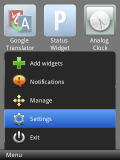
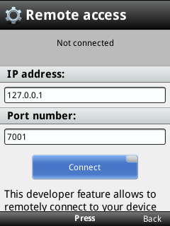
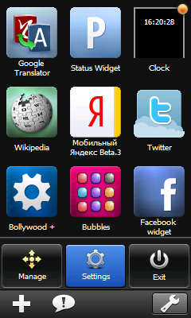
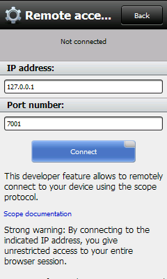

Remote debugging of widgets on mobile devices
24th April 2012: Please note
Starting with Opera 12, Opera Widgets will be turned off for new users and completely removed in a later release. If you're interested in building addons for Opera, we recommend going with our extensions platform — check out our extensions documentation to get started.
Table of contents:
Introduction
This article shows you how to debug widgets running on your mobile phone. For some background, take a look at the following articles:
- Opera Dragonfly architecture
- Remote debugging with Opera Dragonfly
- Debugging widgets using Opera Dragonfly and the Widget Emulator.
In essence, you need to run an instance of Opera Dragonfly (inside your desktop browser) then configure the Widget manager on the device to communicate with this instance. You can then view, stop and step into code in widgets running on the device from the desktop instance.
First of all, configure Opera Dragonfly to accept remote debugging connections and which port to use, as described in the article on remote debugging.
The S60 and Windows Mobile Widget manager application is a separate application from the Opera Mobile browser, which means that the manager and the browser don’t share settings directly. To debug widgets run from the Widget manager, you need to configure access to Opera Dragonfly in a dialog in the manager. In this dialog, you set the IP and port of the desktop computer the device should connect to.
If using Windows, you may need to open the port in your Windows Firewall.
Both the desktop computer and the device must be connected to the same WLAN to be able to connect.
Configuring Opera Dragonfly on S60 and Windows Mobile
Open the Widget manager menu and choose the Settings option. Select Developer tools then Remote access. This will open the dialog for configuring access to the debugger (see Figure 1). Into the dialog, enter the IP address of the desktop computer and the port you configured in the desktop instance, and hit “Connect”.
 
Figure 1: Configuring Opera Dragonfly on S60
 
Figure 2: Configuring Opera Dragonfly on Windows Mobile
Getting started with debugging
Once you’ve configured your instances, you should get a message confirming you are connected. Run the widget you want to debug from the Widget manager on the device, then find your widget in the drop-down box in your Opera Dragonfly instance on the desktop and get debugging!
This article is licensed under a Creative Commons Attribution-Noncommercial-Share Alike 3.0 Unported license.
Comments
The forum archive of this article is still available on My Opera.
No new comments accepted.